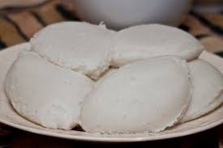

Nsima Recipe

Nsima is a Zambian staple food.
It is served with various other foods.
INGREDIENTS
- 1 cup cold water
- 3 cups hot water
- 2 to 3 cups corn meal
STEPS
- Boil water in a saucepan. Make a paste using some of the meal with the cup of cold water.
- Add the paste to hot water. Stir with a wooden spoon until thickened like porridge.
- Cover the saucepan and simmer for some time (about 15 minutes). Lower the heat a little.
- Remove the lid and gradually add corn meal, stirring constantly and flattening any lumps that may form.
- Continue to add meal and stir until nsima thickens to the desired consistency (some people like it thin,
and others prefer it thick). Cover and reduce heat to very low. Leave for a few minutes to allow further cooking.
- Stir the nsima once again and serve in a slightly wet serving dish. Cover to keep it warm.
- Serve with meat,relish, or vegetables.
- Serves 4.
Go to Home